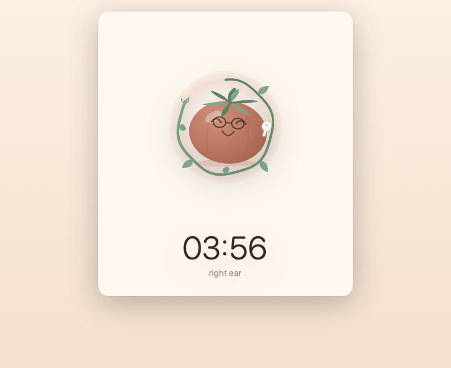
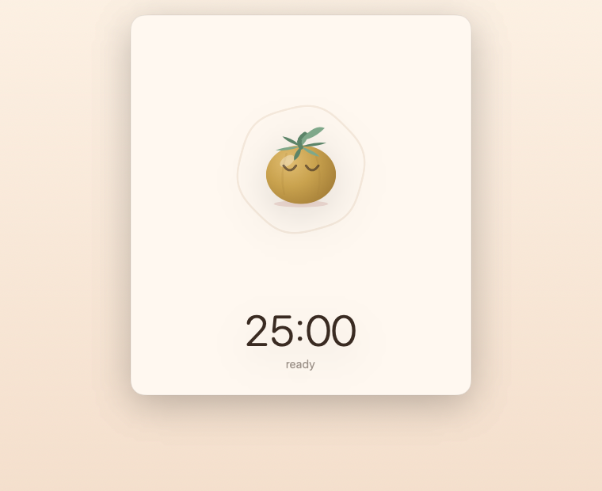

How it actually works
No camera. No wearable. Nothing new to buy. Just the earbuds already in your ears.
Settle in
Five seconds of calibration captures whatever position is comfortable for you. That becomes your baseline — not some textbook posture.
Work
Pitch and roll stream from the buds at 50 Hz and get compared against your baseline, entirely on your Mac.
Glance
Drift and the fruit stays pale. Hold steady and it ripens. You read it in half a second, and nothing ever interrupts you.

→ Move your cursor across it. That is roughly what your head does.
It copies your head, live
Lean, and the tomato leans. Sink toward your shoulders and it sinks. Not an animation on a loop — that is your own head, streaming from your ears fifty times a second.

Posture ripens the fruit
Hold the position you settled into and the tomato ripens. Drift, and it stays pale. That is the whole trick: a posture reminder that never breaks the focus the timer exists to protect.

One earbud is enough
Most people walk around with one in. The app reads whichever ear it finds, tells you which one, and draws only that bud.

The vine is the clock
Focus and break lengths you choose. Finish a session and the tomato is harvested into your crate; end one early and it is squashed into a ketchup sachet that expires in seven days.

The timer works on its own
Crates, drawer, sounds, settings — all of it runs without AirPods. You only lose the posture half.
🔬 Things we had to measure ourselves
Apple documents the API, not the behaviour. Building this meant finding out that the buds actually stream at 50 Hz, not the 25 Hz repeated all over the internet; that your head rests near −39° of pitch rather than zero, because the sensor sits in your ear and not on the crown of your head — which is why calibration is mandatory and not a nicety; and that there is no magnetometer, so yaw drifts and only pitch and roll can be trusted. There is also no notification when a bud comes out. You find out by noticing the silence.
What it will not do
PostureTomato does not tell you whether your posture is good. It can't — head orientation alone cannot see your spine, and no app that claims otherwise from an earbud is being straight with you. What it does is notice when you have drifted from the position you chose, and show you, gently.
Support
Questions, bugs, or ideas — mail me and I'll actually reply.
- Which headphones work?
- AirPods (3rd generation), AirPods Pro (all generations), AirPods Max, and Beats Fit Pro. Earlier AirPods have no motion sensors.
- Can I use just one earbud?
- Yes. The app detects which ear and draws only that bud.
- Do I need AirPods at all?
- No. Everything but the mirroring works without them.
- It says not connected, but they are.
- Motion data only flows while the buds are in your ears. Put them back in and it reconnects on its own within a few seconds.
- Why did my tomato turn into ketchup?
- Ending a session early squashes it into a sachet. It sits in the drawer for seven days, then expires.
- How do I reset my baseline?
- Recalibrate in Settings, or just start a new session — each one begins with a five-second calibration.